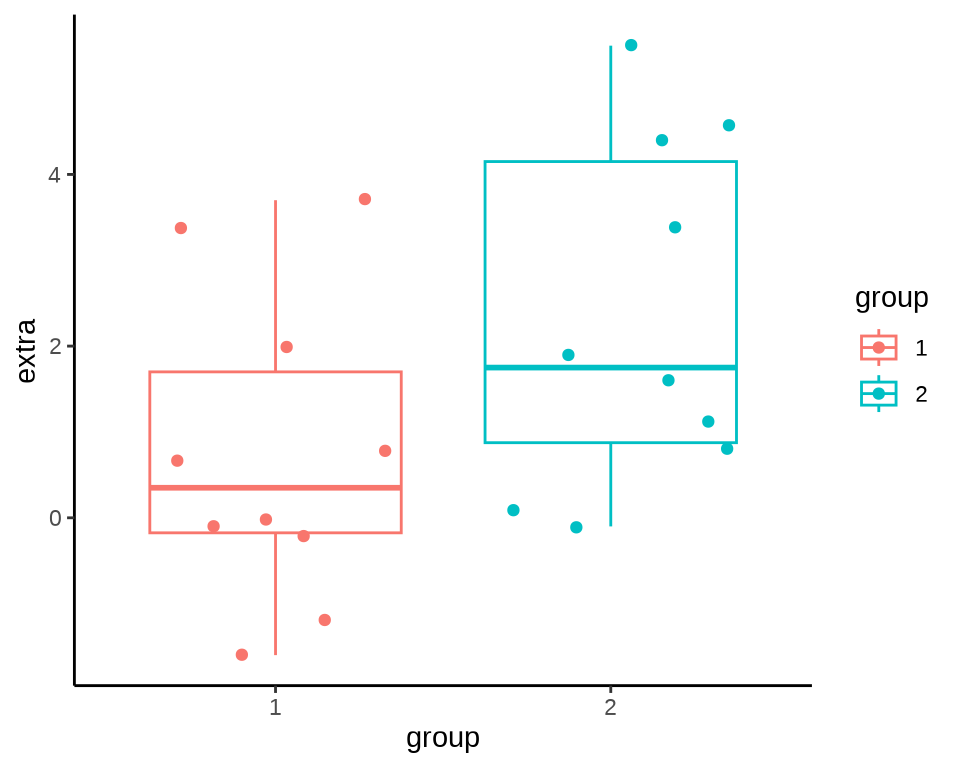
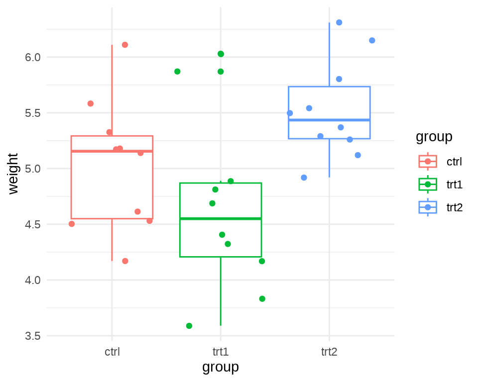
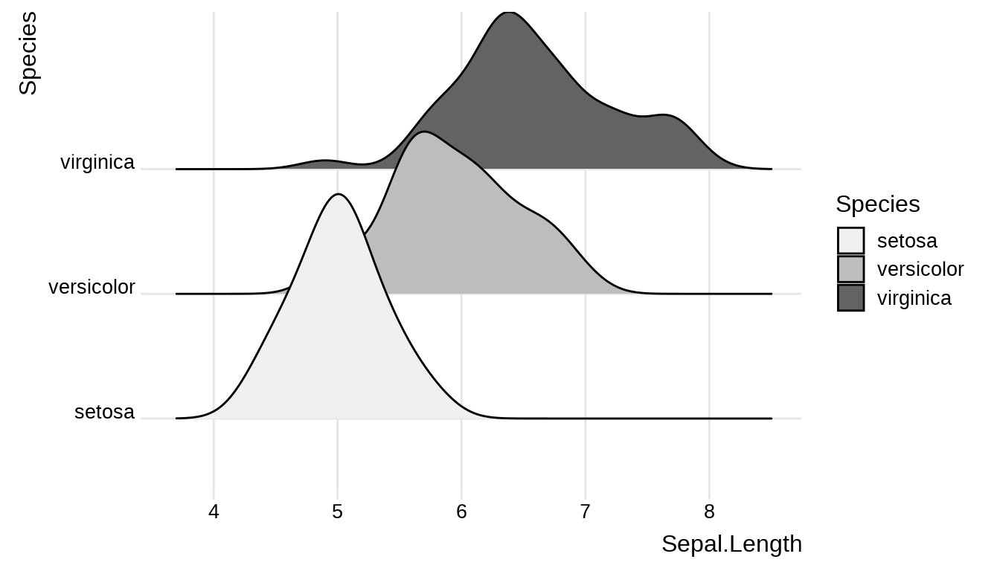

library(nlme)
library(ggplot2)
library(pwr) # 计算检验的功效和实验样本量
library(dunn.test) # dunn.test
library(car) # leveneTest 可替代 bartlett.test
library(survival)
library(coin) # 补充更多的检验方法
# library(multcomp) # 多重比较
# library(MKpower) # power.welch.t.test
# library(rstatix) # 管道操作整合检验方法
# library(pwrss) # 常见检验的功效和样本量计算19 常见的统计检验
\[ \def\bm#1{{\boldsymbol #1}} \]
本章亮点
比较全面地展示各类统计检验问题的 R 语言实现，其覆盖面之广，远超市面上同类 R 语言书籍。从连续数据到离散数据，从单样本到两样本，再到一般的多样本，触及最前沿的热门话题。
对每类统计检验问题都给出示例及 R 语言实现，涉及近 40 个统计检验方法。在组织结构上，本章按照数据情况对检验方法分类，方便读者根据手头的数据情况，快速从众多的方法中定位最合适的检验方法，符合从数据出发进行分析实战的要求。
The Earth is Round (\(p < 0.05\))
— Jacob Cohen (Cohen 1994)
Jacob Cohen 实际谈的是更加深刻的问题。开篇介绍为什么需要假设检验，做检验和不做检验有什么区别？R. A. Fisher 将抽样分布、参数估计和假设检验列为统计推断的三个中心内容，可见假设检验的重要地位。经过近百余年的发展，假设检验具有丰富的内容，可以从不同的角度对检验方法进行归类。
- 检验方法归类：参数与非参数检验方法。
- 检验计算方式：近似 Approximate、精确 Extract、模拟 Simulation 和重抽样 Bootstrap 等方式。
- 检验对象归类：位置参数（均值）和尺度参数（方差）的检验。
- 检验总体数量归类：单总体、两个总体和多个总体。
- 检验总体分布归类：正态、二项、泊松、多项分布等。
- 检验总体维度归类：分一维、二维和多维的情形。
- 检验样本的数量：小样本 \(n < 30\) 和大样本 \(n \geq 30\)。
\(\chi^2\) 分布、t 分布和 F 分布作为最基础的三大抽样分布，分别是由 K. Pearson 卡尔·皮尔逊、W. S. Gosset 哥塞特、R. A. Fisher 费希尔提出，并以他们的名字命名的。在假设检验中，也有许多检验方法是以提出者的名字命名的。本来名字具有突出效果，由检验方法联系人物名称，可以帮助记忆，但如此之多，以至于很难一一记住。因此，本文也不按检验方法罗列，但是，推荐读者了解这些统计大师的工作和故事，相信会加深对这些检验方法的理解。关于检验方法，如有不明白的地方，可以查看维基百科词条。对每个检验问题，本章给出原假设和备择假设，检验统计量及其服从的分布，R 语言实现（自编或调用函数，如果调用函数，说明参数及其含义），不讲公式推导过程。
在 R 语言中，有大量的函数可以对样本数据做检验，每一个函数对应一个或多个检验问题。为了让读者根据手头数据可以快速地找到最合适的检验方法。单样本检验、两样本检验和多样本检验都只针对连续数据。计数数据检验针对离散数据，不区分总体数量。配对样本检验是两样本检验中的特殊情况，不分连续还是离散，不分两个样本还是多个样本，多个样本就是两两配对检验。前面都是关于某个特征统计量的检验，对分布的检验涉及样本点是否来自正态分布，样本点是否独立和平稳，样本点是否来自某一分布，两个样本是否来自相同分布等。
19.1 单样本检验
flowchart LR A(单样本) --> B1(正态总体) A --> B2(总体未知) B1 --> C1(均值检验) C1 --> D1(方差已知) --> E1(Z 检验) C1 --> D2(方差未知) --> E2(t 检验) B1 --> C2(方差检验) --> E3(卡方检验) B2 --> C3(均值检验) --> E4(Wilcoxon 秩和检验) B2 --> C4(方差检验) --> E5[无检验方法]
19.1.1 正态总体均值检验
19.1.1.1 方差已知
\[ \begin{aligned} \mathrm{I} \quad H_0: \mu - \mu_0 \leq 0 \quad vs. \quad H_1: \mu - \mu_0 > 0 \\ \mathrm{II} \quad H_0: \mu - \mu_0 \geq 0 \quad vs. \quad H_1: \mu - \mu_0 < 0 \\ \mathrm{III} \quad H_0: \mu - \mu_0 = 0 \quad vs. \quad H_1: \mu - \mu_0 \neq 0 \end{aligned} \]
设 \(x_1,\cdots,x_n\) 是来自总体 \(\mathcal{N}(\mu,\sigma^2)\) 的样本，样本均值和方差分别
\(\bar{x} = \frac{\sum_{i=1}^{n}x_i}{n}\) ，\(s^2 = \frac{1}{n-1}\sum_{i=1}^{n}(x_i - \bar{x})^2\)
考虑到 \(\bar{x} \sim \mathcal{N}(\mu,\sigma^2 / n)\) ，则检验统计量服从正态分布
\[ u = \frac{\bar{x} - \mu_0}{\sigma / \sqrt{n}} \]
假定 \(\mu_0 = 1\) 对于检验问题 I 拒绝域 \(\{u \geq u_{1-\alpha}\}\)
set.seed(20232023)
n <- 20
# 样本
x <- rnorm(n, mean = 1.8, sd = 2)
# 检验统计量
u <- (mean(x) - 1) / (2 / sqrt(n))
# 临界值
qnorm(p = 1 - 0.05, mean = 0, sd = 1)#> [1] 1.644854#> [1] 0.005082465
重要
随机变量 \(X\) 服从标准正态分布，它的概率分布函数如下：
\[ P(X \leq u)= \phi(u) = \frac{1}{\sqrt{2\pi}}\int_{-\infty}^{u}\mathrm{e}^{-t^2/2}\mathrm{dt} \]
若已知概率 \(p = 0.95\) ，则对应的下分位点可用函数 qnorm() 计算。
19.1.1.2 方差未知
\[ \begin{aligned} \mathrm{I} \quad H_0: \mu - \mu_0 \leq 0 \quad vs. \quad H_1: \mu - \mu_0 > 0 \\ \mathrm{II} \quad H_0: \mu - \mu_0 \geq 0 \quad vs. \quad H_1: \mu - \mu_0 < 0 \\ \mathrm{III} \quad H_0: \mu - \mu_0 = 0 \quad vs. \quad H_1: \mu - \mu_0 \neq 0 \end{aligned} \]
考虑到
\[ \begin{aligned} & \frac{\bar{x} - \mu}{\sigma / \sqrt{n}} \sim \mathcal{N}(0,1) \\ & \frac{(n-1)s^2}{\sigma^2} \sim \chi^2(n-1) \\ & \mathsf{E}\{s^2\} = \sigma^2 \quad \mathsf{Var}\{s^2\} = \frac{2\sigma^4}{n-1} \end{aligned} \]
根据 t 分布的定义，检验统计量服从 t 分布，即 \(t \sim t(n-1)\)
\[ t = \frac{\bar{x} - \mu_0}{s/\sqrt{n}} \]
假定 \(\mu_0 = 1\) 对于检验问题 I ，拒绝域 \(\{t \geq t_{1-\alpha}(n-1)\}\)
#> [1] 1.729133#> [1] 0.01569596
注释
英国统计学家 William Sealy Gosset (1876-1937) 于 1908 年在杂志 《Biometrics》 上以笔名 Student 发表论文《The Probable Error of a Mean》("Student" 1908)，论文中展示了独立同正态分布的样本 \(x_1, \ldots, x_n \stackrel{i.i.d}{\sim} \mathcal{N}(\mu,\sigma^2)\) 的样本方差 \(s^2\) 和样本标准差 \(s\) 的抽样分布，根据均值和标准差不相关的性质导出 t 分布，宣告 t 分布的诞生，因其在小样本领域的突出贡献，W. S. Gosset 进入世纪名人录 (Heyde 等 2001)。
| 0.75 | 0.8 | 0.9 | 0.95 | 0.975 | 0.99 | 0.995 | 0.999 | |
|---|---|---|---|---|---|---|---|---|
| 1 | 1.0000 | 1.3764 | 3.0777 | 6.3138 | 12.7062 | 31.8205 | 63.6567 | 318.3088 |
| 2 | 0.8165 | 1.0607 | 1.8856 | 2.9200 | 4.3027 | 6.9646 | 9.9248 | 22.3271 |
| 3 | 0.7649 | 0.9785 | 1.6377 | 2.3534 | 3.1824 | 4.5407 | 5.8409 | 10.2145 |
| 4 | 0.7407 | 0.9410 | 1.5332 | 2.1318 | 2.7764 | 3.7469 | 4.6041 | 7.1732 |
| 5 | 0.7267 | 0.9195 | 1.4759 | 2.0150 | 2.5706 | 3.3649 | 4.0321 | 5.8934 |
| 6 | 0.7176 | 0.9057 | 1.4398 | 1.9432 | 2.4469 | 3.1427 | 3.7074 | 5.2076 |
| 7 | 0.7111 | 0.8960 | 1.4149 | 1.8946 | 2.3646 | 2.9980 | 3.4995 | 4.7853 |
| 8 | 0.7064 | 0.8889 | 1.3968 | 1.8595 | 2.3060 | 2.8965 | 3.3554 | 4.5008 |
| 9 | 0.7027 | 0.8834 | 1.3830 | 1.8331 | 2.2622 | 2.8214 | 3.2498 | 4.2968 |
| 10 | 0.6998 | 0.8791 | 1.3722 | 1.8125 | 2.2281 | 2.7638 | 3.1693 | 4.1437 |
19.1.2 正态总体方差检验
卡方检验 \(\chi^2\) 检验统计量服从卡方分布。
\[ \begin{aligned} \mathrm{I} \quad H_0: \sigma^2 - \sigma^2_0 \leq 0 \quad vs. \quad H_1: \sigma^2 - \sigma^2_0 > 0 \\ \mathrm{II} \quad H_0: \sigma^2 - \sigma^2_0 \geq 0 \quad vs. \quad H_1: \sigma^2 - \sigma^2_0 < 0 \\ \mathrm{III} \quad H_0: \sigma^2 - \sigma^2_0 = 0 \quad vs. \quad H_1: \sigma^2 - \sigma^2_0 \neq 0 \end{aligned} \]
一般假定均值 \(\mu\) 是未知的。检验统计量服从卡方分布 \(\chi^2(n-1)\)
\[ \chi^2 = \frac{(n-1)s^2}{\sigma^2_0} \]
设 \(\sigma^2_0 = 1.5^2\) ，考虑检验问题 I
#> [1] 30.14353#> [1] 0.002183653R 软件提供很多统计分布的计算，因此，不再需要查分位数表，现算即可。计算自由度为 \(n\) 概率为 \(p\) 的 \(\chi^2\) 分布的分位数 \(\chi^2_p(n)\) ，即
\[ P(\chi^2(n) \leq \chi^2_p(n)) = p \]
若已知自由度为 1 ，概率为 0.05，则可借助分位数函数 qchisq() 计算对应的（下）分位点。
同理，也可以获得 \(\chi^2\) 分布的分位数 表格 19.2 ，计算出来的分位数保留 4 位小数。
| 0.005 | 0.01 | 0.025 | 0.05 | 0.1 | 0.9 | 0.95 | 0.975 | 0.99 | 0.995 | |
|---|---|---|---|---|---|---|---|---|---|---|
| 1 | 0.0000 | 0.0002 | 0.0010 | 0.0039 | 0.0158 | 2.7055 | 3.8415 | 5.0239 | 6.6349 | 7.8794 |
| 2 | 0.0100 | 0.0201 | 0.0506 | 0.1026 | 0.2107 | 4.6052 | 5.9915 | 7.3778 | 9.2103 | 10.5966 |
| 3 | 0.0717 | 0.1148 | 0.2158 | 0.3518 | 0.5844 | 6.2514 | 7.8147 | 9.3484 | 11.3449 | 12.8382 |
| 4 | 0.2070 | 0.2971 | 0.4844 | 0.7107 | 1.0636 | 7.7794 | 9.4877 | 11.1433 | 13.2767 | 14.8603 |
| 5 | 0.4117 | 0.5543 | 0.8312 | 1.1455 | 1.6103 | 9.2364 | 11.0705 | 12.8325 | 15.0863 | 16.7496 |
| 6 | 0.6757 | 0.8721 | 1.2373 | 1.6354 | 2.2041 | 10.6446 | 12.5916 | 14.4494 | 16.8119 | 18.5476 |
| 7 | 0.9893 | 1.2390 | 1.6899 | 2.1673 | 2.8331 | 12.0170 | 14.0671 | 16.0128 | 18.4753 | 20.2777 |
| 8 | 1.3444 | 1.6465 | 2.1797 | 2.7326 | 3.4895 | 13.3616 | 15.5073 | 17.5345 | 20.0902 | 21.9550 |
| 9 | 1.7349 | 2.0879 | 2.7004 | 3.3251 | 4.1682 | 14.6837 | 16.9190 | 19.0228 | 21.6660 | 23.5894 |
| 10 | 2.1559 | 2.5582 | 3.2470 | 3.9403 | 4.8652 | 15.9872 | 18.3070 | 20.4832 | 23.2093 | 25.1882 |
19.1.3 总体未知均值检验
有了均值和方差，为什么还要位置参数和尺度参数？为了更一般地描述问题，扩展范围。特别是在总体分布未知或知之甚少的情况下做检验，不再仅限于均值和方差这样的特征量。
考虑前面正态总体均值检验中的假设 I 的形式，若总体的分布形式未知，则需要 Wilcoxon （威尔科克森）秩和检验 wilcox.test() 来做均值的比较。
#>
#> Wilcoxon signed rank exact test
#>
#> data: x
#> V = 163, p-value = 0.01479
#> alternative hypothesis: true location is greater than 1相比于 t 检验，P 值更小。
19.1.4 总体未知方差检验
19.2 两样本检验
flowchart LR A(两样本) --> B1(正态总体) A --> B2(总体未知) B1 --> C1(均值检验) C1 --> D1(方差已知) --> E1(Z 检验) C1 --> D2(方差未知但相等) --> E2(t 检验) C1 --> D3(方差未知且不等) --> E3(Welch t 检验) B1 --> C2(方差检验) --> E4(F 检验) C2 --> E7(Bartlett 检验) B2 --> C3(均值检验) --> E5(Wilcoxon 符号秩检验\nKruskal-Wallis 秩和检验) B2 --> C4(方差检验) --> E8(Ansari-Bradley 检验\nMood 检验\nFligner-Killeen 检验)
设 \(x_1,\cdots,x_{n_1}\) 是来自总体 \(\mathcal{N}(\mu_1,\sigma_1^2)\) 的样本，设 \(y_1,\cdots,y_{n_2}\) 是来自总体 \(\mathcal{N}(\mu_2,\sigma_2^2)\) 的样本。
19.2.1 正态总体均值检验
两样本均值之差的检验
代码
library(ggplot2)
# 绘制虚线所需的数据
const <- 1 / sqrt(2 * pi)
dat <- data.frame(
x = c(-1, -1, 3, 3),
y = c(const, 0, const / 1.5, 0),
group = c("dnorm1", "dnorm1", "dnorm2", "dnorm2"),
upper = c(const, 0, const / 1.5, 0),
lower = c(0, 0, 0, 0)
)
ggplot() +
geom_function(
fun = dnorm, args = list(mean = -1, sd = 1),
aes(colour = "dnorm1"), linewidth = 1.5, xlim = c(-5, 10)
) +
geom_function(
fun = dnorm, args = list(mean = 3, sd = 1.5),
aes(colour = "dnorm2"), linewidth = 1.5, xlim = c(-5, 10)
) +
scale_color_brewer(palette = "Set1", labels = c(
dnorm1 = "$\\mathcal{N}(\\mu_1, \\sigma_1^2)$",
dnorm2 = "$\\mathcal{N}(\\mu_2, \\sigma_2^2)$"
)) +
geom_linerange(
aes(x = x, y = y, ymin = lower, ymax = upper, colour = group),
linewidth = 2, lty = 2, show.legend = FALSE, data = dat
) +
annotate("text", x = -1, y = 0, label = "$\\mu_1$", vjust = 2.5) +
annotate("text", x = 3, y = 0, label = "$\\mu_2$", vjust = 2.5) +
theme_classic(base_size = 13) +
theme(legend.position.inside = c(0.9, 0.9)) +
labs(x = "$x$", y = "$f(x)$", color = "正态分布") +
coord_cartesian(clip = "off")常见检验问题
\[ \begin{aligned} \mathrm{I} \quad H_0: \mu_1 - \mu_2 \leq 0 \quad vs. \quad H_1: \mu_1 - \mu_2 > 0 \\ \mathrm{II} \quad H_0: \mu_1 - \mu_2 \geq 0 \quad vs. \quad H_1: \mu_1 - \mu_2 < 0 \\ \mathrm{III} \quad H_0: \mu_1 - \mu_2 = 0 \quad vs. \quad H_1: \mu_1 - \mu_2 \neq 0 \end{aligned} \]
19.2.1.1 方差已知
\[ u = \frac{(\bar{x} - \bar{y}) - (\mu_1 - \mu_2)}{\sqrt{\frac{\sigma^2_1}{n_1} + \frac{\sigma^2_2}{n_2}} } \]
检验统计量服从标准正态分布 \(u \sim \mathcal{N}(0,1)\)，检验统计量 \(u\) 对应的样本值 \(u_0\)，检验的拒绝域和 \(P\) 值如下
\[ W_1 = \{u \geq u_{1 - \alpha} \}, \quad p_1 = 1 - \varPhi(u_0) \]
n_1 <- 100
n_2 <- 80
mu_1 <- 10
sigma_1 <- 2.5
mu_2 <- 6
sigma_2 <- 4.5
set.seed(20232023)
x1 <- rnorm(n_1, mean = mu_1, sd = sigma_1)
y1 <- rnorm(n_2, mean = mu_2, sd = sigma_2)
u0 <- (mean(x1) - mean(y1)) / sqrt(sigma_1^2 / n_1 + sigma_2^2 / n_2)
u0#> [1] 6.779039对检验问题 I，给定显著性水平 \(\alpha = 0.05\)，得出拒绝域 \(\{ u \geq 1.645\}\)，计算样本观察值得到的检验统计量的值 \(u_0 = 6.779\)，而该值落在拒绝域，所以拒绝原假设，即拒绝 \(\mu_1 - \mu_2 \leq 0\)，则接受 \(\mu_1 - \mu_2 > 0\)。
19.2.1.2 方差未知但相等
设 \(x_1,\cdots,x_{n_1}\) 是来自总体 \(\mathcal{N}(\mu_1,\sigma^2)\) 的样本，设 \(y_1,\cdots,y_{n_2}\) 是来自总体 \(\mathcal{N}(\mu_2,\sigma^2)\) 的样本。
t 检验，检验统计量服从自由度为 \(n_1 + n_2 - 2\) 的 t 分布
\[ t = \frac{(\bar{x} -\bar{y})-(\mu_1 - \mu_2)}{s_0\sqrt{\frac{1}{n_1} + \frac{1}{n_2}}} \]
其中，
\[ \begin{aligned} & \bar{x} = \sum_{i=1}^{n_1}x_i \quad \bar{y} = \sum_{i=1}^{n_2}y_i \\ & s_0^2 = \frac{1}{n_1 + n_2 - 2}\big(\sum_{i=1}^{n_1}(x_i - \bar{x})^2 + \sum_{i=1}^{n_2}(y_i - \bar{y})^2\big) \end{aligned} \]
s_w <- sqrt(1 / (n_1 + n_2 - 2) * ((n_1 - 1) * var(x1) + (n_2 - 1) * var(y1)))
t0 <- (mean(x1) - mean(y1)) / (s_w * sqrt(1 / n_1 + 1 / n_2))
t0#> [1] 8.155781样本观察值 \(t_0 = 8.155 > t_{0.95}(n_1 + n_2 -2) = 1.653\) 落在拒绝域内，对于检验问题 I 我们要拒绝原假设
#> [1] 1.653459#> [1] 3.019807e-14利用 R 内置的 t.test() 函数计算
#>
#> Two Sample t-test
#>
#> data: x1 and y1
#> t = 8.1558, df = 178, p-value = 3.016e-14
#> alternative hypothesis: true difference in means is greater than 0
#> 95 percent confidence interval:
#> 3.036384 Inf
#> sample estimates:
#> mean of x mean of y
#> 10.338905 6.530406检验统计量的值及对应的 P 值都是一样的。睡眠数据 sleep 记录了两种药物对病人睡眠时间的影响，此数据集由 “Student”（哥塞特的笔名） 收集。
#>
#> Two Sample t-test
#>
#> data: extra by group
#> t = -1.8608, df = 18, p-value = 0.07919
#> alternative hypothesis: true difference in means between group 1 and group 2 is not equal to 0
#> 95 percent confidence interval:
#> -3.363874 0.203874
#> sample estimates:
#> mean in group 1 mean in group 2
#> 0.75 2.3319.2.1.3 方差未知且不等
两个样本的样本量不是很大，总体方差也未知，两样本均值之差的显著性检验，即著名的 Behrens-Fisher 问题，Welch 在 1938 年提出近似服从自由度为 \(l\) 的 t 分布。
两样本的样本量很大，尽管总体方差未知，两样本均值之差的显著性检验，极限分布是正态分布，可以用 Z 检验。在样本量很大的情况下，Welch t 检验也可以用。
设 \(x_1,\cdots,x_{n_1}\) 是来自总体 \(\mathcal{N}(\mu_1,\sigma_1^2)\) 的 IID 样本，设 \(y_1,\cdots,y_{n_2}\) 是来自总体 \(\mathcal{N}(\mu_2,\sigma_2^2)\) 的 IID 样本。
Welch（韦尔奇） t 检验
\[ T = \frac{(\bar{x} - \bar{y}) - (\mu_1 - \mu_2)}{\sqrt{\frac{s_x^2}{n_1} + \frac{s_y^2}{n_2}} } \]
其中，\(s_x^2\) 表示样本 x 的方差 \(s_x^2 = \frac{1}{n_1-1}\sum_{i=1}^{n_1}(x_i -\bar{x})^2\) ，\(s_y^2\) 表示样本 y 的方差 \(s_y^2 = \frac{1}{n_2-1}\sum_{i=1}^{n_2}(y_i -\bar{y})^2\) 。检验统计量 \(T\) 服从自由度为 \(l\) 的 t 分布。
\[ l = \frac{s_0^4}{ \frac{s_x^4}{n_1^2(n_1 - 1)} + \frac{s_y^4}{n_2^2(n_2-1)} } \]
其中， \(s_0^2 = s_x^2 / n_1 + s_y^2/n_2\)，\(l\) 通常不是整数，实际使用时，\(l\) 可取最近的整数。
s0 <- var(x1) / n_1 + var(y1) / n_2
l <- s0^2 / (var(x1)^2 / (n_1^2 * (n_1 - 1)) + var(y1)^2 / (n_2^2 * (n_2 - 1)))
l#> [1] 126.7708所以， \(l\) 可取 127。检验统计量的值如下
#> [1] 1.65694#> [1] 1.162404e-12#> [1] 1.153078e-12与函数 t.test() 比较，值得注意，t 分布的自由度可以为非整数。
#>
#> Welch Two Sample t-test
#>
#> data: x1 and y1
#> t = 7.77, df = 126.77, p-value = 1.162e-12
#> alternative hypothesis: true difference in means is greater than 0
#> 95 percent confidence interval:
#> 2.996334 Inf
#> sample estimates:
#> mean of x mean of y
#> 10.338905 6.530406举例：sleep 数据集

#>
#> Welch Two Sample t-test
#>
#> data: extra by group
#> t = -1.8608, df = 17.776, p-value = 0.07939
#> alternative hypothesis: true difference in means between group 1 and group 2 is not equal to 0
#> 95 percent confidence interval:
#> -3.3654832 0.2054832
#> sample estimates:
#> mean in group 1 mean in group 2
#> 0.75 2.33
注释
Egon Pearson 接过他父亲 Karl Pearson 的职位，担任伦敦大学学院的高尔顿统计教授。许宝騄（Pao-Lu Hsu）在 Jerzy Neyman 和 Egon Pearson 主编的杂志《Statistical Research Memoirs》发表第一篇关于 Behrens-Fisher 问题的论文 (HSU 1938)，1998 年关于 Behrens-Fisher 问题的综述 (Kim 和 Cohen 1998)。陈家鼎和郑忠国一起整理了许宝騄的生平事迹和学术成就，见《许宝騄先生的生平和学术成就》。钟开涞（Kai-Lai Chung）将许宝騄的论文集整理出版 (HSU 1983)。
t 检验的影响是如此巨大，以至于广泛存在于具有统计功能的软件中，比如办公软件里的 t 检验。以 MacOS 上的 Numbers 表格软件为例，如 图 19.5 所示，首先打开 Numbers 软件，新建工作表，输入两组数值，然后点击空白处，再从顶部导航栏找到「插入」菜单，「公式」选项，点击扩展选项「新建公式」，在弹出的会话条里输入 TTEST，依次选择第一组，第二组值，检验类型和样本类型，最后点击确认，即可得到两样本 t 检验的 P 值结果。
微软 Excel 办公软件也提供 t 检验计算器，和 MacOS 系统上的 Numbers 办公软件类似，它提供 T.TEST 函数，计算结果也一样，此处从略。R 软件自带 t.test() 函数，也是用于做 t 检验，如下：
#>
#> Welch Two Sample t-test
#>
#> data: c(3, 4, 5, 8, 9, 1, 2, 4, 5) and c(6, 19, 3, 2, 14, 4, 5, 17, 1)
#> t = -1.3622, df = 10.255, p-value = 0.2023
#> alternative hypothesis: true difference in means is not equal to 0
#> 95 percent confidence interval:
#> -8.767183 2.100516
#> sample estimates:
#> mean of x mean of y
#> 4.555556 7.88888919.2.2 正态总体方差检验
比较两个正态总体的方差是否相等，F 检验。
#>
#> F test to compare two variances
#>
#> data: extra by group
#> F = 0.79834, num df = 9, denom df = 9, p-value = 0.7427
#> alternative hypothesis: true ratio of variances is not equal to 1
#> 95 percent confidence interval:
#> 0.198297 3.214123
#> sample estimates:
#> ratio of variances
#> 0.7983426#>
#> Bartlett test of homogeneity of variances
#>
#> data: extra by group
#> Bartlett's K-squared = 0.10789, df = 1, p-value = 0.7426注意：函数 bartlett.test() 支持多样本情况。
19.2.3 总体未知均值检验
在总体分布未知的情况下，比较均值是否相等的检验。
-
wilcox.test()适用于单样本和两样本的均值检验，单样本 Wilcoxon 秩和检验，两样本 Wilcoxon 符号秩和检验，后者也叫 Mann-Whitney 检验。 -
kruskal.test()适用于两样本和多样本，比较多个均值是否相等的检验，Kruskal-Wallis 秩和检验。
单样本和两样本 wilcox.test()。
#> Warning in wilcox.test.default(x = DATA[[1L]], y = DATA[[2L]], ...): cannot
#> compute exact p-value with ties#>
#> Wilcoxon rank sum test with continuity correction
#>
#> data: extra by group
#> W = 25.5, p-value = 0.06933
#> alternative hypothesis: true location shift is not equal to 0coin 包提供渐进 Wilcoxon-Mann-Whitney 检验
#>
#> Asymptotic Wilcoxon-Mann-Whitney Test
#>
#> data: extra by group (1, 2)
#> Z = -1.8541, p-value = 0.06372
#> alternative hypothesis: true mu is not equal to 0
#> 95 percent confidence interval:
#> -3.500000e+00 1.270214e-10
#> sample estimates:
#> difference in location
#> -1.347344# Exact Wilcoxon-Mann-Whitney Test
wilcox_test(
extra ~ group, data = sleep,
distribution = "exact", conf.int = TRUE
)#>
#> Exact Wilcoxon-Mann-Whitney Test
#>
#> data: extra by group (1, 2)
#> Z = -1.8541, p-value = 0.06582
#> alternative hypothesis: true mu is not equal to 0
#> 95 percent confidence interval:
#> -3.5 0.0
#> sample estimates:
#> difference in location
#> -1.35两样本和多样本 kruskal.test() 。
#>
#> Kruskal-Wallis rank sum test
#>
#> data: extra by group
#> Kruskal-Wallis chi-squared = 3.4378, df = 1, p-value = 0.06372能用参数检验的一定也可以用非参数检验，一般来说，非参数检验的功效不小于参数检验，非参数检验不要求分布是正态，比如此时 P 值从 0.07939 降至 0.06372。
19.2.4 总体未知方差检验
对总体没有分布要求的方差齐性检验方法有三个，按适用范围分类，见下 表格 19.3 。
| 两个样本 | 多个样本 |
|---|---|
|
|
以 A. R. Ansari 和 R. A. Bradley 命名的 Ansari-Bradley 检验 (Ansari 和 Bradley 1960)，对应的 R 函数是 ansari.test() ，以 A. M. Mood 命名的 Mood 检验 (Mood 1954)，对应的 R 函数是 mood.test() ，这两者都属于两样本的非参数检验，检验尺度参数是否相同（齐性）。以 M. A. Fligner 和 T. J. Killeen 命名的 Fligner-Killeen 检验 (Fligner 和 Killeen 1976)，对应的 R 函数是 fligner.test() ，也属于非参数检验，适用于两样本和多样本的情况。非参数检验常涉及位置参数和尺度参数这一对概念，就正态分布而言，位置参数可以理解为均值 \(\mu\) ，尺度参数可以理解为方差 \(\sigma^2\) 。
#> Warning in ansari.test.default(x = DATA[[1L]], y = DATA[[2L]], ...): cannot
#> compute exact p-value with ties#>
#> Ansari-Bradley test
#>
#> data: extra by group
#> AB = 50.5, p-value = 0.4927
#> alternative hypothesis: true ratio of scales is not equal to 1#>
#> Mood two-sample test of scale
#>
#> data: extra by group
#> Z = 0.44761, p-value = 0.6544
#> alternative hypothesis: two.sided#>
#> Fligner-Killeen test of homogeneity of variances
#>
#> data: extra by group
#> Fligner-Killeen:med chi-squared = 0.21252, df = 1, p-value = 0.644819.3 多样本检验
flowchart LR A(多样本) --> B1(正态总体) A --> B2(总体未知) B1 --> C1(均值检验) C1 --> D2(方差相等) --> E2(F 检验) C1 --> D3(方差不等) --> E3(F 检验) B1 --> C2(方差检验) --> E4(Hartley 检验\n Bartlett 检验\n 修正的 Bartlett 检验\n Levene 检验) B2 --> C3(均值检验) --> E5(Kruskal-Wallis 秩和检验\n Friedman 秩和检验\n Quade 检验) B2 --> C4(方差检验) --> E7(Fligner-Killeen 检验)
本节考虑 Base R 内置的 PlantGrowth 数据集，它收集自 Annette J. Dobson 所著书籍《An Introduction to Statistical Modelling》(Dobson 1983) 第 2 章第 2 节的案例 — 研究植物在两种不同试验条件下的生长情况，植物通过光合作用吸收土壤的养分和空气中的二氧化碳，完成积累，故以植物的干重来刻画植物的生长情况，首先将几乎相同的种子随机地分配到实验组和对照组，基于完全随机实验设计（completely randomized experimental design），经过预定的时间后，将植物收割，干燥并称重。
#> 'data.frame': 30 obs. of 2 variables:
#> $ weight: num 4.17 5.58 5.18 6.11 4.5 4.61 5.17 4.53 5.33 5.14 ...
#> $ group : Factor w/ 3 levels "ctrl","trt1",..: 1 1 1 1 1 1 1 1 1 1 ...设立对照组（控制组）ctrl 和实验组 trt1 和 trt2，比较不同的处理方式对植物干重的影响
#> weight group
#> Min. :3.590 ctrl:10
#> 1st Qu.:4.550 trt1:10
#> Median :5.155 trt2:10
#> Mean :5.073
#> 3rd Qu.:5.530
#> Max. :6.310每个组都有 10 颗植物，生长情况如 图 19.7 所示
## Annette J. Dobson 扩展的 Plant Weight Data 数据，见 59 页
library(ggplot2)
ggplot(data = PlantGrowth, aes(x = group, y = weight, color = group)) +
geom_boxplot() +
geom_jitter() +
theme_minimal()

19.3.1 正态总体均值检验
19.3.1.1 假定同方差
讲清楚原假设和备择假设。讲清楚假设检验、方差分析、一般线性模型（包含广义线性模型和线性混合效应模型）的关系。
\(\sigma_i^2 = \mathsf{Var}\{\epsilon_{ij}\}, i = 1,2,3\) 表示第 \(i\) 组的方差，
\[ y_{ij} = \mu + \epsilon_{ij}, i = 1,2,3 \]
其中 \(\mu\) 是固定的未知参数。单因素方差分析 oneway.test()
#>
#> One-way analysis of means
#>
#> data: weight and group
#> F = 4.8461, num df = 2, denom df = 27, p-value = 0.01591线性模型也假定各个组的方差是相同的，模型显著性检验的结果和上面是一致的。
#> Analysis of Variance Table
#>
#> Response: weight
#> Df Sum Sq Mean Sq F value Pr(>F)
#> group 2 3.7663 1.8832 4.8461 0.01591 *
#> Residuals 27 10.4921 0.3886
#> ---
#> Signif. codes: 0 '***' 0.001 '**' 0.01 '*' 0.05 '.' 0.1 ' ' 1模型输出整理成 表格 19.4
| 估计值 | 标准差 | t 统计量 | P 值 | |
|---|---|---|---|---|
| \(\alpha\) | 5.032 | 0.1971 | 25.5265 | 0.0000 |
| \(\beta_1\) | -0.371 | 0.2788 | -1.3308 | 0.1944 |
| \(\beta_2\) | 0.494 | 0.2788 | 1.7720 | 0.0877 |
19.3.1.2 假定异方差
#> group weight
#> 1 ctrl 0.3399956
#> 2 trt1 0.6299211
#> 3 trt2 0.1958711#> ctrl trt1 trt2
#> 0.3399956 0.6299211 0.1958711各个组的方差确实不太相同。
#>
#> One-way analysis of means (not assuming equal variances)
#>
#> data: weight and group
#> F = 5.181, num df = 2.000, denom df = 17.128, p-value = 0.01739线性混合效应模型，假定每一组（层）有不同的方差。
fit_gls <- nlme::gls(weight ~ 1,
data = PlantGrowth, method = "ML",
weights = nlme::varIdent(form = ~ 1 | group)
)
summary(fit_gls)#> Generalized least squares fit by maximum likelihood
#> Model: weight ~ 1
#> Data: PlantGrowth
#> AIC BIC logLik
#> 67.99884 73.60363 -29.99942
#>
#> Variance function:
#> Structure: Different standard deviations per stratum
#> Formula: ~1 | group
#> Parameter estimates:
#> ctrl trt1 trt2
#> 1.0000000 1.6028758 0.9103568
#>
#> Coefficients:
#> Value Std.Error t-value p-value
#> (Intercept) 5.205999 0.115762 44.97158 0
#>
#> Standardized residuals:
#> Min Q1 Med Q3 Max
#> -1.78654574 -0.92900218 -0.08794552 0.61374803 2.09128348
#>
#> Residual standard error: 0.5798892
#> Degrees of freedom: 30 total; 29 residual考虑每个组有不同的方差，放开同方差的假设，发现，从对数似然的角度来看，有一定提升。
19.3.2 正态总体方差检验
总体服从正态分布，有四种常见的参数检验方法：
- Hartley 检验：各组样本量必须相等。
- Bartlett 检验：各组样本量可以相等或不等，但每个组的样本量必须不低于 5。
- 修正的 Bartlett 检验：在样本量较大或较小、相等或不等场合都可使用。
- Levene 检验：相当于单因素组间方差分析，相比于 Bartlett 检验，Levene 检验更加稳健。
提示
在总体分布未知的情况下，检验方差齐性的非参数方法也都可以用在这里。
设 \(x_1,\cdots,x_{n_1}\) 是来自总体 \(\mathcal{N}(\mu_1,\sigma_1^2)\) 的样本，设 \(y_1,\cdots,y_{n_2}\) 是来自总体 \(\mathcal{N}(\mu_2,\sigma_2^2)\) 的样本，设 \(z_1,\cdots,z_{n_3}\) 是来自总体 \(\mathcal{N}(\mu_3,\sigma_3^2)\) 的样本。
\[ \sigma_1^2 = \sigma_2^2 = \sigma_3^2 \quad vs. \quad \sigma_1^2,\sigma_2^2,\sigma_3^2 \quad \text{不全相等} \]
Bartlett （巴特利特）检验 bartlett.test() 要求总体的分布为正态分布，检验各个组的方差是否有显著性差异，即方差齐性检验，属于参数检验，适用于多个样本的情况。
#>
#> Bartlett test of homogeneity of variances
#>
#> data: weight by group
#> Bartlett's K-squared = 2.8786, df = 2, p-value = 0.2371#> Levene's Test for Homogeneity of Variance (center = median)
#> Df F value Pr(>F)
#> group 2 1.1192 0.3412
#> 2719.3.3 总体未知均值检验
Kruskal-Wallis 秩和检验 kruskal.test() 检验均值是否齐性。
#>
#> Kruskal-Wallis rank sum test
#>
#> data: weight by group
#> Kruskal-Wallis chi-squared = 7.9882, df = 2, p-value = 0.01842等价的线性模型表示
#> Analysis of Variance Table
#>
#> Response: rank(weight)
#> Df Sum Sq Mean Sq F value Pr(>F)
#> group 2 618.95 309.475 5.1324 0.01291 *
#> Residuals 27 1628.05 60.298
#> ---
#> Signif. codes: 0 '***' 0.001 '**' 0.01 '*' 0.05 '.' 0.1 ' ' 1Friedman 秩和检验是非参数检验。适用于单因素重复测量数据的方差分析，检验是否存在一组值显著高于或低于其他组。针对 unreplicated blocked data
典型场景：n 个品酒师对 k 瓶葡萄酒打分，是否存在一组打分显著高于其他组。检验睡眠质量一组人显著好于另一组人。
#>
#> Friedman rank sum test
#>
#> data: extra and group and ID
#> Friedman chi-squared = 9, df = 1, p-value = 0.0027formula 参数取值为 a ~ b | c ，a 表示数据值，b 分组变量 groups，c 表示 blocks。
Quade 检验 quade.test() 与 Friedman 检验类似，Quade 检验应用于 unreplicated complete block designs。
#>
#> Quade test
#>
#> data: extra and group and ID
#> Quade F = 28.557, num df = 1, denom df = 9, p-value = 0.0004661术语涉及实验设计，比如完全区组设计 complete block designs 。1879 年迈克尔逊光速测量数据记录了五次实验，每次试验测量 20 次光速。数据集 morley 中光速 Speed 已经编码过了，为了展示方便，原始观测速度减去了 299000 (km/sec)。
#>
#> Quade test
#>
#> data: Speed and Expt and Run
#> Quade F = 3.6494, num df = 4, denom df = 76, p-value = 0.00897619.3.4 总体未知方差检验
三个及以上样本的方差齐性检验。进一步地，我们在线性模型的基础上考虑每个实验组有不同的方差，先做方差齐性检验。
#>
#> Fligner-Killeen test of homogeneity of variances
#>
#> data: weight by group
#> Fligner-Killeen:med chi-squared = 2.3499, df = 2, p-value = 0.3088检验的结果显示，可以认为三个组的方差没有显著差异。
19.4 配对样本检验
配对样本检验算是两样本检验的一种特殊情况。若待检验的样本不止两个，则两两配对检验。
| 样本 | R 函数 |
|---|---|
| 两样本 |
|
19.4.1 配对 t 检验
做两个组的配对 t 检验，函数 t.test() 的参数 paired 设置为 TRUE ，两个组的样本当作配对样本处理。
#>
#> Paired t-test
#>
#> data: extra by group
#> t = -4.0621, df = 9, p-value = 0.002833
#> alternative hypothesis: true mean difference is not equal to 0
#> 95 percent confidence interval:
#> -2.4598858 -0.7001142
#> sample estimates:
#> mean difference
#> -1.58做多个组的两两配对 t 检验，函数 pairwise.t.test() 的参数 paired 设置为 TRUE ，当仅做两个组的配对 t 检验时，检验结果与前面的等价。
#>
#> Pairwise comparisons using paired t tests
#>
#> data: extra and group
#>
#> 1
#> 2 0.0028
#>
#> P value adjustment method: holm输出结果中，组 1 和组 2 配对 t 检验的 P 值为 0.0028。
提示
两个组的配对 t 检验还与变截距的线性混合效应模型等价。
#> Linear mixed-effects model fit by REML
#> Data: sleep
#> AIC BIC logLik
#> 77.95588 81.51737 -34.97794
#>
#> Random effects:
#> Formula: ~1 | ID
#> (Intercept) Residual
#> StdDev: 1.6877 0.8697384
#>
#> Fixed effects: extra ~ group
#> Value Std.Error DF t-value p-value
#> (Intercept) 0.75 0.6003979 9 1.249172 0.2431
#> group2 1.58 0.3889588 9 4.062127 0.0028
#> Correlation:
#> (Intr)
#> group2 -0.324
#>
#> Standardized Within-Group Residuals:
#> Min Q1 Med Q3 Max
#> -1.63372282 -0.34157076 0.03346151 0.31510644 1.83858572
#>
#> Number of Observations: 20
#> Number of Groups: 10输出结果中，固定效应部分 group2 意味着相对于第 1 组，第 2 组的增加值，其为 1.58，对应的 t 统计量的值为 4.062127， P 值为 0.0028。调用 nlme 包的函数 intervals() 计算固定效应部分 95% 的置信区间。
#> Approximate 95% confidence intervals
#>
#> Fixed effects:
#> lower est. upper
#> (Intercept) -0.6081944 0.75 2.108194
#> group2 0.7001140 1.58 2.459886group2 对应的 95% 的置信区间是 \((0.7001140, 2.459886)\) 。
19.4.2 配对 Wilcoxon 检验
Wilcoxon 检验函数 wilcox.test() 设置 paired = TRUE 可以做配对检验，但是仅限于两个组。
# 不支持
# wilcox.test(weight ~ group, data = PlantGrowth, paired = TRUE)
# 支持
wilcox.test(extra ~ group, data = sleep, paired = TRUE)#> Warning in wilcox.test.default(x = DATA[[1L]], y = DATA[[2L]], ...): cannot
#> compute exact p-value with ties#> Warning in wilcox.test.default(x = DATA[[1L]], y = DATA[[2L]], ...): cannot
#> compute exact p-value with zeroes#>
#> Wilcoxon signed rank test with continuity correction
#>
#> data: extra by group
#> V = 0, p-value = 0.009091
#> alternative hypothesis: true location shift is not equal to 019.5 多重假设检验
同时检验多个统计假设。
| 样本 | R 函数 |
|---|---|
| 多样本 |
|
19.5.1 多重 t 检验
数据集 sleep 仅有两个组，数据集 PlantGrowth 包含三个组，下面以数据集 PlantGrowth 为例，介绍做多个组同时进行两两比较的 t 检验。
#>
#> Pairwise comparisons using paired t tests
#>
#> data: weight and group
#>
#> ctrl trt1
#> trt1 0.346 -
#> trt2 0.220 0.058
#>
#> P value adjustment method: holm函数 pairwise.t.test() 以 P 值给出两两配对比较的结果，trt1 和 ctrl 配对比较，P 值为 0.346，trt2 和 ctrl 配对比较，P 值为 0.220，以此类推。
19.5.2 多重比例检验
对于离散数据，做两两比例检验，采用函数 pairwise.prop.test() ，如下示例含有 4 个组。
#> Warning in prop.test(x[c(i, j)], n[c(i, j)], ...): Chi-squared approximation
#> may be incorrect
#> Warning in prop.test(x[c(i, j)], n[c(i, j)], ...): Chi-squared approximation
#> may be incorrect
#> Warning in prop.test(x[c(i, j)], n[c(i, j)], ...): Chi-squared approximation
#> may be incorrect#>
#> Pairwise comparisons using Pairwise comparison of proportions
#>
#> data: smokers out of patients
#>
#> 1 2 3
#> 2 1.000 - -
#> 3 1.000 1.000 -
#> 4 0.119 0.093 0.124
#>
#> P value adjustment method: holm19.5.3 Wilcoxon 检验
Wilcoxon 检验的是两个总体的均值是否相等。
函数 pairwise.wilcox.test() 做两个及以上组的两两比较检验。
#> Warning in wilcox.test.default(xi, xj, paired = paired, ...): cannot compute
#> exact p-value with ties#>
#> Pairwise comparisons using Wilcoxon rank sum test with continuity correction
#>
#> data: weight and group
#>
#> ctrl trt1
#> trt1 0.199 -
#> trt2 0.126 0.027
#>
#> P value adjustment method: holm19.5.4 Dunn 检验
dunn.test 包提供函数 dunn.test() 实现 Dunn 检验，将 Kruskal-Wallis 秩和检验用于两两比较。
library(dunn.test)
with(PlantGrowth, dunn.test(x = weight, g = group, method = "holm", altp = TRUE))#> Kruskal-Wallis rank sum test
#>
#> data: weight and group
#> Kruskal-Wallis chi-squared = 7.9882, df = 2, p-value = 0.02
#>
#>
#> Comparison of weight by group
#> (Holm)
#> Col Mean-|
#> Row Mean | ctrl trt1
#> ---------+----------------------
#> trt1 | 1.117725
#> | 0.2637
#> |
#> trt2 | -1.689289 -2.807015
#> | 0.1823 0.0150*
#>
#> alpha = 0.05
#> Reject Ho if p <= alpha19.6 总体分布的检验
前面介绍的检验方法都是对总体的某个特征数（均值、方差）进行检验，下面介绍的检验方法是针对分布的性质。比如样本是否来自正态分布，两个样本是否来自同一分布，样本点之间是否相互独立，样本点列是否平稳等。通过检验方法探索样本的分布性质。
19.6.1 正态性检验
什么样的数据是正态的，理论上是清楚的，对统计建模来说，更实际的问题是什么样的数据是够正态的！探索性数据分析是不断提出假设和验证假设的过程。
Usually (but not always) doing tests of normality reflect a lack of understanding of the power of rank tests, and an assumption of high power for the tests (qq plots don’t always help with that because of their subjectivity). When possible it’s good to choose a robust method. Also, doing pre-testing for normality can affect the type I error of the overall analysis.
— Frank Harrell 1
检验：拒绝原假设和接受原假设的风险，数据本身和理论的正态分布的距离，抛开 P 值
Shapiro 和 Wilk 提出的 W 检验 (Shapiro 和 Wilk 1965) ，对应的 R 函数为 shapiro.test()
#>
#> Shapiro-Wilk normality test
#>
#> data: x
#> W = 0.98635, p-value = 0.3954The issue really comes down to the fact that the questions: “exactly normal?”, and “normal enough?” are 2 very different questions (with the difference becoming greater with increased sample size) and while the first is the easier to answer, the second is generally the more useful one.
— Greg Snow 2
EP 检验对多种备择假设有较高的效率，利用样本的特征函数和正态分布的特征函数的差的模的平方产生的一个加权积分得到 EP 检验统计量 (Epps 和 Pulley 1983)
提示
样本量 \(n \geq 200\) EP 检验统计量 \(T_{EP}\) 非常接近 \(n = \infty\) 时 \(T_{EP}\) 的分位数。
设 \(x_1, \ldots, x_n\) 是来自正态总体 \(\mathcal{N}(\mu,\sigma^2)\) 的样本， EP 检验统计量定义为
\[ T_{EP} = 1 + \frac{n}{\sqrt{3}} + \frac{2}{n}\sum_{i=2}^{n}\sum_{j=1}^{i-1}\exp\big\{ - \frac{(x_j - x_i)^2}{2s^2_{\star}} \big\} - \sqrt{2} \sum_{i=1}^{n}\exp\big\{- \frac{(x_i - \bar{x})^2}{4s^2_{\star}} \big\} \]
其中 \(\bar{x},s^2_{\star}\) 分别是样本均值和（除以 \(n\) 的）样本方差。
19.6.2 同分布检验
Lilliefors 检验 3 和单样本的 ks 检验的关系
As to whether you can do a Lilliefors test for several groups, that depends entirely on your ability to understand what the underlying question would be (see Adams D 1979).
— Knut M. Wittkowski 4
Kolmogorov-Smirnov 检验：单样本或两样本的同分布检验 ks.test()
19.6.3 相关性检验
样本的相关性检验 cor.test()：Pearson’s 相关系数检验，Kendall’s \(\tau\) 检验或者 Spearman’s \(\rho\) 检验。基于美国高等法院律师对州法官的评级数据集 USJudgeRatings 介绍各项评分之间的相关性。
#>
#> Pearson's product-moment correlation
#>
#> data: CONT and INTG
#> t = -0.8605, df = 41, p-value = 0.3945
#> alternative hypothesis: true correlation is not equal to 0
#> 95 percent confidence interval:
#> -0.4168591 0.1741182
#> sample estimates:
#> cor
#> -0.1331909其中，变量 CONT 表示律师与法官的联系次数，INTG 表示司法公正。
19.6.4 独立性检验
时间序列独立性检验 Box.test() 计算 Box-Pierce 或 Ljung-Box 检验统计量来检查给定时间序列的独立性假设。
19.6.5 平稳性检验
时间序列单位根检验，检验时间序列平稳性 Phillips-Perron 的单位根检验 PP.test()
19.7 多元分布情形
- Hotelling T2 检验：总体服从多元正态分布，两样本均值之差的检验。
- Mauchly 球形检验：总体服从多元正态分布，单样本协方差矩阵的检验。
19.7.1 Hotelling T2 检验
Hotelling T2 检验是一维情形下两样本 \(t\) 检验的多维推广。
19.7.2 Mauchly 球形检验
Mauchly 球形检验 mauchly.test() 检验：Wishart 分布的协方差矩阵是否正比于给定的矩阵。一组样本来自多元正态分布，样本的协方差矩阵是关于样本的随机矩阵，随机矩阵的分布服从 Wishart 分布。
如果 \(\bm{x_1}, \bm{x_2}, \cdots, \bm{x_m}\)，\(\bm{x_i} \in \mathbb{R}^p\)，\(\bm{x_i} \overset{i.i.d}{\sim} \mathrm{MVN}(0,\Sigma)\)，即 \(m\) 个样本点都服从均值为 \(0\)，协方差矩阵为 \(\Sigma\) 的 \(p\) 维多元正态分布 \(\mathrm{MVN}(0,\Sigma)\)，且样本点之间相互独立。则 \(X = \bm{x}^{\top}\bm{x}\) 服从参数为 \(\Sigma\) ，自由度为 \(m\) 的 Wishart 分布 \(W_p(\Sigma, m)\)。概率密度函数如下
\[ f(X) = \frac{1}{2^{\frac{mp}{2}}|\Sigma|^{\frac{m}{2}}\Gamma_{p}(\frac{m}{2})}|X|^{(m-p-1)/2}\exp\{-\frac{1}{2}\mathrm{tr}(\Sigma^{-1}X)\} \]
其中， \(\Gamma_p\) 是多元伽马函数，定义如下
\[ \Gamma_p(\frac{m}{2}) = \pi^{p(p-1)/4}\prod_{j=1}^{p}\Gamma(\frac{m}{2} - \frac{j-1}{2}) \]
R 语言内置了一个模拟数生成器，可以直接模拟出服从 Wishart 分布 \(W_p(\Sigma, m)\) 的样本，\(m = \mathrm{df}, \Sigma = \mathrm{Sigma}\)。 R 语言命令如下：
其中，整型参数 n 指定样本量，数值参数 df 指定自由度，正定的 \(p \times p\) 矩阵 Sigma 指定 Wishart 分布的矩阵参数。rWishart() 返回一个 \(p\times p \times n\) 数组 \(R\)，其中 \(R[,,i]\) 是正定矩阵，是服从 Wishart 分布 \(W_p(\Sigma, m)\) 的一个样本点，其中 \(m = \mathrm{df}, \Sigma = \mathrm{Sigma}\)。
set.seed(2022)
# 构造 n 个随机矩阵
S <- matrix(c(1.2, 0.9, 0.9, 1.2), nrow = 2, ncol = 2)
rWishart(n = 3, df = 2, Sigma = S)#> , , 1
#>
#> [,1] [,2]
#> [1,] 3.213745 1.2445391
#> [2,] 1.244539 0.5032642
#>
#> , , 2
#>
#> [,1] [,2]
#> [1,] 4.443057 3.387850
#> [2,] 3.387850 2.605341
#>
#> , , 3
#>
#> [,1] [,2]
#> [1,] 3.614911 4.797919
#> [2,] 4.797919 6.846811随机矩阵 \(M\) 的期望 \(\mathsf{E}(M) = m \times \Sigma\)，随机矩阵 \(M\) 中每个元素的方差
\[ \mathsf{Var}(M_{ij}) = m (\Sigma_{ij}^2 + \Sigma_{ii}\Sigma_{jj}), \quad S = \Sigma \]
若 \(p = 1\)，即 \(\Sigma\) 是一个标量 \(\sigma^2\)，Wishart 分布退化为自由度为 \(\mathrm{df}\) 的卡方分布 \(\chi^2\)，即 \(W_1(\sigma^2, m) = \sigma^2\chi_{m}^2\)。下面计算随机矩阵 \(M\) 的期望。
set.seed(2022)
Wish <- rWishart(n = 3000, df = 2, Sigma = S)
# 计算随机矩阵 M 的期望
apply(Wish, MARGIN = 1:2, FUN = mean)#> [,1] [,2]
#> [1,] 2.375915 1.792558
#> [2,] 1.792558 2.430074#> [,1] [,2]
#> [1,] 2.4 1.8
#> [2,] 1.8 2.4接着计算随机矩阵 \(M\) 的方差。
19.8 假设检验的一些注记
真实数据的情况是复杂多样的，本章按照数据情况对检验方法分类，方便读者根据手头的数据情况，快速从众多的方法中定位最合适的检验方法。依次是单样本检验、两样本检验、多样本检验、计数数据检验、配对样本检验。如果已知符合参数检验的条件，优先考虑参数检验。如果不确定是否符合参数检验的条件，对参数检验和非参数检验方法都适用，非参数检验方法的功效更大，方法更优。在总体分布未知的情况下，无论是对均值检验还是对方差检验，大部分情况下都需要非参数检验方法。
在假设检验理论方面作出贡献的人非常多，自 Karl Pearson 提出卡方统计量、卡方分布和卡方检验以来，陆续涌现出来一批人及载入史册的工作，见下表。不难看出，19 世纪后半叶至20世纪前半叶，假设检验理论经过一个世纪的发展趋于成熟。从假设检验这个细分领域也印证了世界的统计中心从英国逐渐转移到美国，相比而言，中国在这方面的贡献微乎其微。笔者同时也注意到很多检验方法都是以人名命名的，且已经被编写到各类统计软件中。R 语言中有十分丰富的统计检验函数，根据这些函数及其帮助文档可以追溯到检验方法的发明者，再从维基百科中找到学者及其提出的检验方法的详情页，最后，根据学者的出生日期排序整理成表格。
| 姓名 | 国籍 | 出生 | 死亡 | 寿命 | 贡献 |
|---|---|---|---|---|---|
| K. Pearson | 英国 | 1857-03-27 | 1936-04-27 | 79 | 卡方分布、卡方检验 |
| C. Spearman | 英国 | 1863-09-10 | 1945-09-17 | 82 | Spearman’s \(\rho\) |
| W. S. Gosset | 英国 | 1876-06-13 | 1937-10-16 | 61 | t 分布、t 检验 |
| R. A. Fisher | 英国 | 1890-02-17 | 1962-07-29 | 72 | F 检验、Fisher 精确检验 |
| F. Wilcoxon | 美国 | 1892-09-02 | 1965-11-18 | 73 | Wilcoxon 秩检验 |
| H. Cramér | 瑞士 | 1893-09-25 | 1985-10-05 | 92 | Cramér’s V |
| J. Neyman | 波兰、美国 | 1894-04-16 | 1981-08-05 | 87 | Neyman-Pearson 引理 |
| E. S. Pearson | 英国 | 1895-08-11 | 1980-06-12 | 84 | Neyman-Pearson 引理 |
| H. Hotelling | 美国 | 1895-09-29 | 1973-12-26 | 78 | Hotelling T2 检验 |
| E. J. G. Pitman | 澳大利亚 | 1897-10-29 | 1993-07-21 | 95 | Pitman 估计 |
| J. Wishart | 英国 | 1898-11-28 | 1956-07-14 | 57 | Wishart 分布 |
| Q. M. McNemar | 美国 | 1900-02-20 | 1986-07-03 | 86 | McNemar 检验 |
| F. Yates | 英国 | 1902-05-12 | 1994-06-17 | 92 | Yates 矫正 |
| A. Wald | 匈牙利 | 1902-10-31 | 1950-12-13 | 48 | Wald 检验 |
| A. Kolmogorov | 苏联 | 1903-04-25 | 1987-10-20 | 84 | Kolmogorov-Smirnov 检验 |
| S. S. Wilks | 美国 | 1906-06-17 | 1964-03-07 | 57 | Wilks 检验/似然比检验 |
| J. W. Mauchly | 美国 | 1907-08-30 | 1980-01-08 | 72 | Mauchly 球形检验 |
| M. Kendall | 英国 | 1907-09-06 | 1983-03-29 | 76 | Kendall’s \(\tau\) |
| W. G. Cochran | 英国、美国 | 1909-07-15 | 1980-03-29 | 70 | Cochran–Mantel–Haenszel 检验 |
| M. S. Bartlett | 英国 | 1910-06-18 | 2002-01-08 | 91 | Bartlett 检验 |
| W. M. Haenszel | 美国 | 1910-06-19 | 1998-03-13 | 87 | Cochran–Mantel–Haenszel 检验 |
| B. L. Welch | 英国 | 1911 | 1989-12-29 | 78 | Welch t 检验 |
| H. O. Hartley | 德国 | 1912-04-13 | 1980-12-30 | 68 | Hartley 检验 |
| M. Friedman | 美国 | 1912-07-31 | 2006-11-16 | 94 | Friedman 秩和检验 |
| W. A. Wallis | 美国 | 1912-11-05 | 1998-10-12 | 85 | Kruskal-Wallis 检验 |
| H. Levene | 美国 | 1914-01-17 | 2003-07-02 | 89 | Levene 检验 |
| J. W. Tukey | 美国 | 1915-06-16 | 2000-07-26 | 85 | Tukey’s HSD 检验 |
| O. J. Dunn | 美国 | 1915-09-01 | 2008-01-12 | 92 | Dunn 检验 |
| E. L. Lehmann | 法国、美国 | 1917-11-20 | 2009-09-12 | 91 | Lehmann-Scheffé 定理 |
| T. W. Anderson | 美国 | 1918-06-05 | 2016-09-17 | 98 | Anderson–Darling 检验 |
| N. Mantel | 美国 | 1919-02-16 | 2002-05-25 | 83 | Cochran–Mantel–Haenszel 检验 |
| W. Kruskal | 美国 | 1919-10-10 | 2005-04-21 | 85 | Kruskal-Wallis 检验 |
| George E. P. Box | 英国、美国 | 1919-10-18 | 2013-03-28 | 93 | Box-Pierce 检验 |
| C. R. Rao | 印度、美国 | 1920-09-10 | 2023-08-22 | 102 | Score 检验 |
| M. Wilk | 加拿大 | 1922-12-18 | 2013-02-19 | 90 | Shapiro-Wilk 检验 |
| J. Durbin | 英国 | 1923-06-30 | 2012-06-23 | 88 | Durbin 检验 |
| L. Le Cam | 法国 | 1924-11-18 | 2000-04-25 | 75 | 渐近理论 |
| H. Lilliefors | 美国 | 1928-06-14 | 2008-02-23 | 80 | Lilliefors 检验 |
| S. S. Shapiro | 美国 | 1930-07-13 | - | 93 | Shapiro-Wilk 检验 |
注释
笔者仅根据自己搜集了解的材料制作此表，受一定的局限，或有缺漏和主观。20 世纪 60 年代后，假设检验理论开始成熟起来了，所以仅考虑 1930 年以前出生的。此外，学者需具有一定的名气，至少收录在维基百科词条里。
其中，最重要的统计学家及其学术传承关系见下 图 19.9 。
flowchart LR F_Galton(F. Galton\n 1822-1911) --> K_Pearson(K. Pearson\n 1857-1936) K_Pearson --> R_A_Fisher(R. A. Fisher \n 1890-1962) R_A_Fisher --> J_Neyman(J. Neyman\n1894-1981) R_A_Fisher --> E_S_Pearson(E. S. Pearson \n1895-1980) J_Neyman --> E_L_Lehmann(E. L. Lehmann\n1917-2009) E_S_Pearson --> A_Wald(A. Wald\n1902-1950)
F. Galton 是 K. Pearson 的老师，E. S. Pearson 是 K. Pearson 的儿子。E. L. Lehmann 是 J. Neyman 的学生，J. Neyman 和 E. S. Pearson 一起提出 N-P 引理，是置信区间和假设检验理论的奠基人。假设检验和区间估计、决策理论是紧密相关的，A. Wald 是继 J. Neyman 和 E. S. Pearson 之后，继续开疆拓土的一位统计学家，不幸的是，在一场飞机事故中英年早逝。
19.8.1 假设检验和多重比较的关系
FDR 是 False Discovery Rate 的简称
19.8.2 假设检验和方差分析的关系
19.8.2.1 单因素一元方差分析
函数 aov() 可以做单、双因素一元方差分析
两两比较，多重比较
#> Tukey multiple comparisons of means
#> 95% family-wise confidence level
#>
#> Fit: aov(formula = weight ~ group, data = PlantGrowth)
#>
#> $group
#> diff lwr upr p adj
#> trt1-ctrl -0.371 -1.0622161 0.3202161 0.3908711
#> trt2-ctrl 0.494 -0.1972161 1.1852161 0.1979960
#> trt2-trt1 0.865 0.1737839 1.5562161 0.0120064自己实现方差分析
# 自由度
df1 <- 2
df2 <- 27
# 每组样本量
group.size <- 10
# 组间方差
sq.between <- sum(tapply(
PlantGrowth$weight, PlantGrowth$group,
function(x) (mean(x) - mean(PlantGrowth$weight))^2
)) * group.size
mean.sq.between <- sq.between / df1
# 组内方差
sq.within <- sum(tapply(
PlantGrowth$weight, PlantGrowth$group,
function(x) sum((x - mean(x))^2)
))
mean.sq.within <- sq.within / df2
# F 统计量
f.value <- mean.sq.between / mean.sq.within
f.value#> [1] 4.846088#> [1] 0.01590996从假设检验角度看单因素方差分析，方差分析其实是在比较多个组的均值是否有显著差异。
#>
#> One-way analysis of means
#>
#> data: weight and group
#> F = 4.8461, num df = 2, denom df = 27, p-value = 0.01591方差分析还可以纳入线性模型的框架内
#>
#> Call:
#> lm(formula = weight ~ group, data = PlantGrowth)
#>
#> Residuals:
#> Min 1Q Median 3Q Max
#> -1.0710 -0.4180 -0.0060 0.2627 1.3690
#>
#> Coefficients:
#> Estimate Std. Error t value Pr(>|t|)
#> (Intercept) 5.0320 0.1971 25.527 <2e-16 ***
#> grouptrt1 -0.3710 0.2788 -1.331 0.1944
#> grouptrt2 0.4940 0.2788 1.772 0.0877 .
#> ---
#> Signif. codes: 0 '***' 0.001 '**' 0.01 '*' 0.05 '.' 0.1 ' ' 1
#>
#> Residual standard error: 0.6234 on 27 degrees of freedom
#> Multiple R-squared: 0.2641, Adjusted R-squared: 0.2096
#> F-statistic: 4.846 on 2 and 27 DF, p-value: 0.01591#> Analysis of Variance Table
#>
#> Response: weight
#> Df Sum Sq Mean Sq F value Pr(>F)
#> group 2 3.7663 1.8832 4.8461 0.01591 *
#> Residuals 27 10.4921 0.3886
#> ---
#> Signif. codes: 0 '***' 0.001 '**' 0.01 '*' 0.05 '.' 0.1 ' ' 1假定各个组来自正态总体，且它们的方差相同，从 F 统计量的值和检验的 P 值看，方差分析 aov() 、假设检验 oneway.test() 和线性模型 lm() 在这里等价了。
19.8.2.2 双因素一元方差分析
如果 dose = 2， 则 len 与提供的方式 supp 没有关系。
#> Call:
#> aov(formula = len ~ supp * dose, data = ToothGrowth)
#>
#> Terms:
#> supp dose supp:dose Residuals
#> Sum of Squares 205.3500 2224.3043 88.9201 933.6349
#> Deg. of Freedom 1 1 1 56
#>
#> Residual standard error: 4.083142
#> Estimated effects may be unbalanced19.8.2.3 单因素多元方差分析
PlantGrowth 属于一元方差分析，观测变量只有植物干重一个变量。如果推广到多个变量，就是多元方差分析 multivariate analysis of variance 。不同种类的鸢尾花的萼片长度的分布有所不同。
library(ggplot2)
library(ggridges)
ggplot(data = iris, aes(x = Sepal.Length, y = Species, fill = Species)) +
scale_fill_brewer(palette = "Greys") +
geom_density_ridges(bandwidth = 0.2) +
theme_ridges(font_size = 12, font_family = "sans")

fit <- manova(cbind(Sepal.Length, Sepal.Width, Petal.Length, Petal.Width) ~ Species, data = iris)
summary(fit, test = "Wilks")#> Df Wilks approx F num Df den Df Pr(>F)
#> Species 2 0.023439 199.15 8 288 < 2.2e-16 ***
#> Residuals 147
#> ---
#> Signif. codes: 0 '***' 0.001 '**' 0.01 '*' 0.05 '.' 0.1 ' ' 1P 值小于 0.0.5，说明 iris 数据集三个组的均值向量有显著差异。关于均值向量的检验方法，请看 ?summary.manova 。
按 Species 分组统计各个变量的样本均值、样本方差
#> Species Sepal.Length Sepal.Width Petal.Length Petal.Width
#> 1 setosa 5.006 3.428 1.462 0.246
#> 2 versicolor 5.936 2.770 4.260 1.326
#> 3 virginica 6.588 2.974 5.552 2.026#> Species Sepal.Length Sepal.Width Petal.Length Petal.Width
#> 1 setosa 0.1242490 0.14368980 0.03015918 0.01110612
#> 2 versicolor 0.2664327 0.09846939 0.22081633 0.03910612
#> 3 virginica 0.4043429 0.10400408 0.30458776 0.0754326519.8.3 假设检验与区间估计的关系
区间估计的意义是解决点估计可靠性问题，它用置信系数解决了对估计结果的信心问题，弥补了点估计的不足。置信系数是最大的置信水平。
Base R 提供的 binom.test() 函数可以精确计算置信区间，即所谓的 Clopper-Pearson 区间，而 prop.test() 函数可近似计算置信区间，即所谓的 Wilson 区间。以单样本的比例检验为例。
#> Warning in prop.test(x = 2, n = 10, p = 0.95, conf.level = 0.95, correct =
#> TRUE): Chi-squared approximation may be incorrect#>
#> 1-sample proportions test with continuity correction
#>
#> data: 2 out of 10, null probability 0.95
#> X-squared = 103.16, df = 1, p-value < 2.2e-16
#> alternative hypothesis: true p is not equal to 0.95
#> 95 percent confidence interval:
#> 0.03542694 0.55781858
#> sample estimates:
#> p
#> 0.2#>
#> Exact binomial test
#>
#> data: 2 and 10
#> number of successes = 2, number of trials = 10, p-value = 1.605e-09
#> alternative hypothesis: true probability of success is not equal to 0.95
#> 95 percent confidence interval:
#> 0.02521073 0.55609546
#> sample estimates:
#> probability of success
#> 0.2实际达到的置信度水平随真实的未知参数值和样本量的变化而剧烈波动，这意味着这种参数估计方法在实际应用中不可靠、真实场景中参数真值是永远未知的，样本量是可控的，并且是可以变化的。根本原因在于这类分布是离散的，比如这里的二项分布。当样本数据服从离散的分布，置信区间的端点也是离散的。这种缺陷是无法避免的，清晰的置信区间和离散的数据之间存在无法调和的冲突。
19.8.4 常见的统计检验是线性模型
两样本的均值检验：非参数检验方法
19.8.4.1 Wilcoxon 符号秩检验
与 wilcox.test() 等价的线性模型
signed_rank <- function(x) sign(x) * rank(abs(x))
fit <- lm(signed_rank(extra) ~ group, data = sleep)
summary(fit)#>
#> Call:
#> lm(formula = signed_rank(extra) ~ group, data = sleep)
#>
#> Residuals:
#> Min 1Q Median 3Q Max
#> -14.55 -6.55 0.90 6.90 13.95
#>
#> Coefficients:
#> Estimate Std. Error t value Pr(>|t|)
#> (Intercept) 3.050 2.872 1.062 0.3022
#> group2 8.300 4.061 2.044 0.0559 .
#> ---
#> Signif. codes: 0 '***' 0.001 '**' 0.01 '*' 0.05 '.' 0.1 ' ' 1
#>
#> Residual standard error: 9.081 on 18 degrees of freedom
#> Multiple R-squared: 0.1884, Adjusted R-squared: 0.1433
#> F-statistic: 4.177 on 1 and 18 DF, p-value: 0.0558919.8.4.2 Kruskal-Wallis 秩和检验
与 kruskal.test() 等价的线性模型表示。
#>
#> Call:
#> lm(formula = rank(extra) ~ group, data = sleep)
#>
#> Residuals:
#> Min 1Q Median 3Q Max
#> -8.450 -3.925 -0.500 5.275 8.950
#>
#> Coefficients:
#> Estimate Std. Error t value Pr(>|t|)
#> (Intercept) 8.050 1.738 4.633 0.000207 ***
#> group2 4.900 2.457 1.994 0.061520 .
#> ---
#> Signif. codes: 0 '***' 0.001 '**' 0.01 '*' 0.05 '.' 0.1 ' ' 1
#>
#> Residual standard error: 5.495 on 18 degrees of freedom
#> Multiple R-squared: 0.1809, Adjusted R-squared: 0.1354
#> F-statistic: 3.976 on 1 and 18 DF, p-value: 0.0615219.8.5 假设检验的工业应用
传统的试验设计为什么不适用于互联网？因为Fisher的实验设计和方差分析，主要针对的是受控对象，比如测试武器、肥料配比、飞机制造等实体的东西。互联网是虚拟经济，实验的对象是人，对平台来说，人的行为是半知半解，更不受控，所以需要成千上万、乃至几十万的样本才能抵消样本内部的随机性。互联网数据的噪声太多、太大了，微小的变化就好像一粒小石子扔进大海里，要获得样本间显著的差异性，需要累积相当的样本量。另一方面，大型的互联网公司，搜索、推荐、广告等业务相对成熟，提升关键指标，拿到好的结果，往往比较困难。成熟的业务几乎不太可能一次实验拿到很好的结果，所以，方向比努力重要，更快地迭代，跑在同行前面，更快地试错（想法），试更多的错（想法），更好地试错（想法），累积更多的经验，做更多地创新，这是 A/B 实验平台的核心价值。
曾经，在学校里，我总想获得一个全局最优解，并且还有这样的情结，到了厂里，发现没人研究全局最优解，大家都在做 A/B 实验优化自己的子业务和方向。有时候这个细分业务方向甚至也就小几万的用户了。 全局最优解和局部最优解，我们不太可能获得全局最优解，一则全局最优解受影响的因素很多，而这些因素变化很快，所以，即使可以获得全局最优解，代价会非常大，那么，怎么办呢？还不如获取局部最优解，研究一个个局部显然比研究全局要简单的多，此外，研究局部的好处是可以快速地随业务迭代。
一个完整的实验周期包含提出问题、设计实验、收集数据、组织数据、统计检验、分析结论、数据解读、数据交流、决策行动、业务价值。这是一个闭环，根据业务中发现的问题，提出解决方法，并设计实验验证。问题有时候就是机会，奋斗的方向，解决问题自然就会带来业务价值。实验又可以按业务问题、数据问题和统计问题划分三个阶段。
- 业务问题：根据目标确定方向，找到有价值的、可以解决的业务问题，再提出合理的统计假设。
- 数据问题：数据收集、数据组织、数据管理、数据治理，验证数据流的完整性、一致性等。
- 统计问题：设计实验方案，包括分流、实验周期等，利用假设检验、区间估计和功效分析等统计工具完成显著性分析、可靠性分析，撰写数据分析和评估报告。
19.9 习题
分析《红楼梦》的情景描写。参考 2009 年东南大学韦博成教授将两个独立二项总体的等价性检验应用于《红楼梦》前80回与后40回某些文风差异的统计分析 (韦博成 2009)。
-
根据数据集 chickwts 分析不同喂食方式对小鸡体重的影响。（单因素方差分析）
-
根据数据集 ChickWeight 分析 4 种喂食方式对小鸡体重有影响，每个小鸡本身对喂食方式的接受、吸收程度不一样、它们本身的素质不一样（个体差异），要考察喂食的方式的影响，应该剔除掉个体差异，才是喂食方式的真正影响。